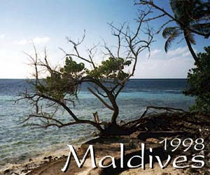

For a more detailed report see Maldives Full Log

Biyadoo is a small island, situated about an hour away from the airport on a speedboat. It has a sister island of Villivaru, and a small dhoni ferry boat operates between the two islands as a free passenger ferry (and laundry boat). Biyadoo (and Villivaru) are both full-board resorts and the food on Biyadoo was very good. As with all Maldive resorts alcohol is expensive, but we found that the lager was okay and not too badly priced (wine is very expensive at around $30 per bottle due to it mainly being imported from Europe).
On arrival at Biyadoo one of the pieces of paper in the Welcome pack is a map of the island showing the passages out to the reef. On Biyadoo I think all but one of the passages was very clearly marked with a flag marking the entry points. We snorkeled at 4 of the passages and the fish life was extraordinary. Unfortunately, we didn't have a "fish guide book" with us and so it was a bit hit and miss identifying them. We did see Parrotfish, Black tip reef sharks, sting rays to name but a few. The visibility was excellent, but the coral wasn't as vibrant as I had been expecting. As you swim out over the reef, the larger fish can be seen coming to feed from the open sea and the experience of watching shoals of fish being herded along like sheep was excellent.
We took advantage of the ferry to Villivaru one day and snorkelled out of Passage 2 on that island. It wasn't marked very well at all leading to me getting lost coming back in and finding myself in a coral field. Having said that, again the quality and quantity of fish life was excellent.
We didn't go on any of the excursions as we were only there for a week, but one of them (Island hopping) does offer the chance to visit an uninhabited island and apparently offers some great snorkeling opportunities.
We took two underwater disposable cameras with us, and the photos have actually come out pretty well. I would recomend them as a cheap way of getting reasonable snaps of your trip.
We will probably be going back to Biyadoo some time.
For a more detailed report see Maldives Full Log
If you find something you want to let us know about, then feel free to leave us a message on the discussion board. We're interested to know what other people think of places we've been, things we've seen.
Back to index page